Módulo 3 | Aula 5
Prática SIG II– QGIS e Mapas Temáticos
Tópico 5
Criando um Layout de Impressão
O passo final é organizar o seu mapa e todos os seus elementos essenciais (título, legenda, escala, etc.) em um layout formal para exportação como imagem ou PDF.
Passos para Criar o Layout:
- Novo Compositor de Impressão: Vá no menu Projeto > Novo Layout de Impressão. Dê um nome ao seu layout.
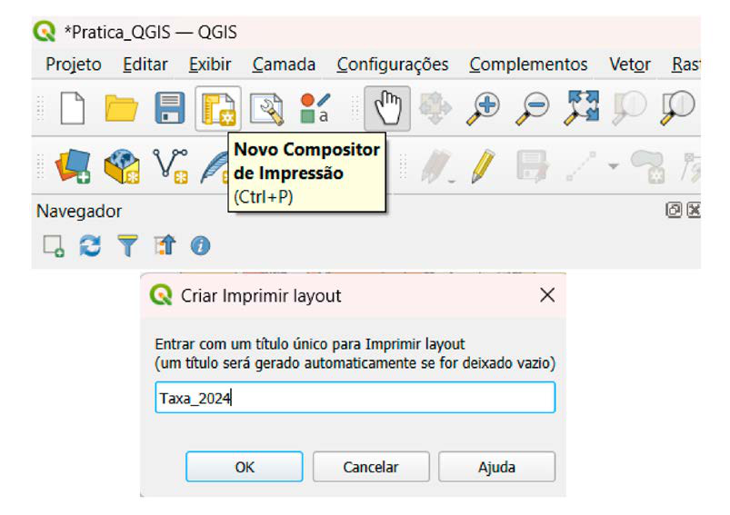
- Adicionar o Mapa: Na nova janela do compositor, vá em Adicionar Item > Adicionar Mapa. Desenhe um retângulo na página para posicionar o seu mapa.
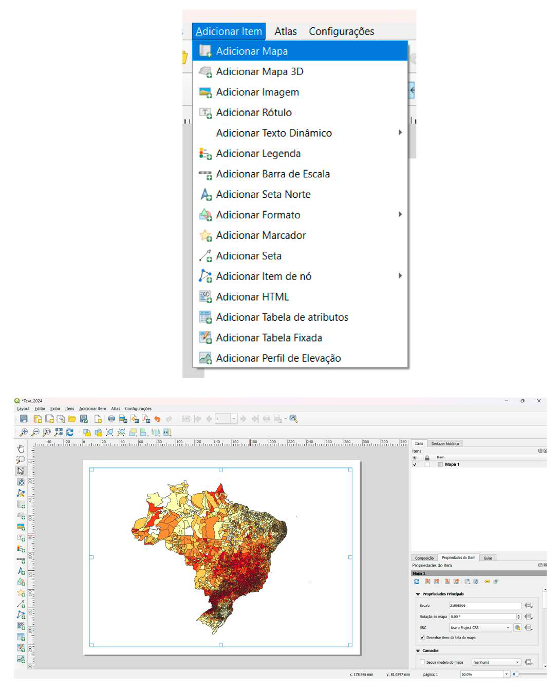
- Adicionar os Elementos Essenciais: Utilizando o menu Adicionar Item, insira os seguintes componentes no seu layout:
- Adicionar Título: Use a ferramenta Adicionar Rótulo. Desenhe o retângulo onde deseja posicionar o título do mapa.
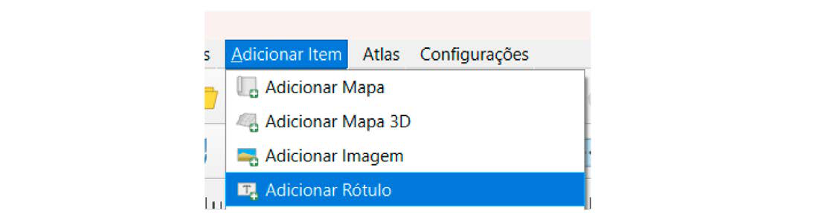
Do lado direito na parte inferior em Propriedades do Item podemos escrever o título e editar tamanho da fonte.
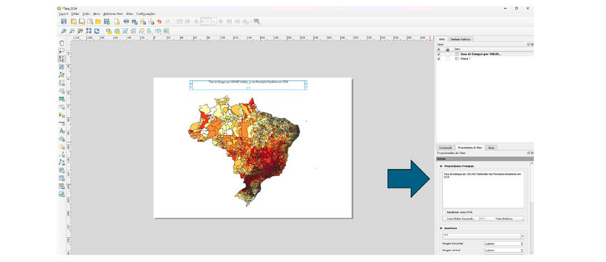
Posicione o alinhamento como central, clique em fonte e coloque o estilo como negrito e o tamanho da fonte 16. O texto irá alterar de forma automática.
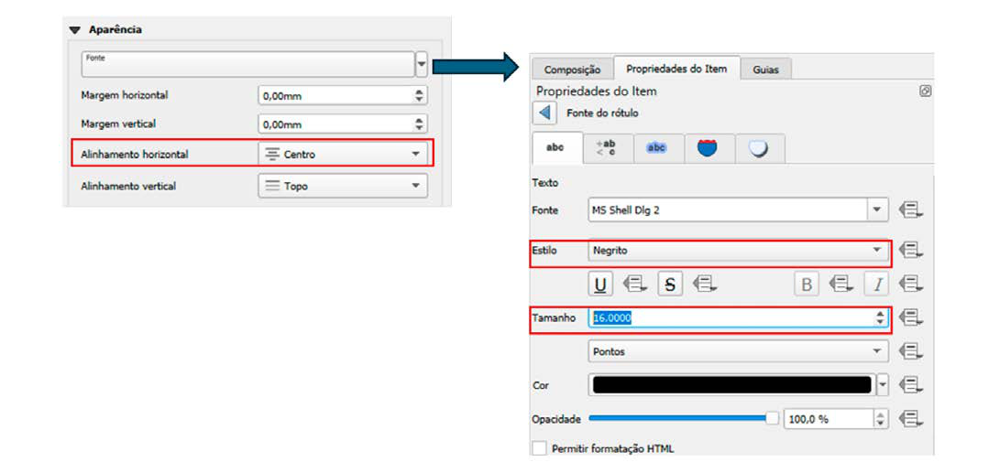
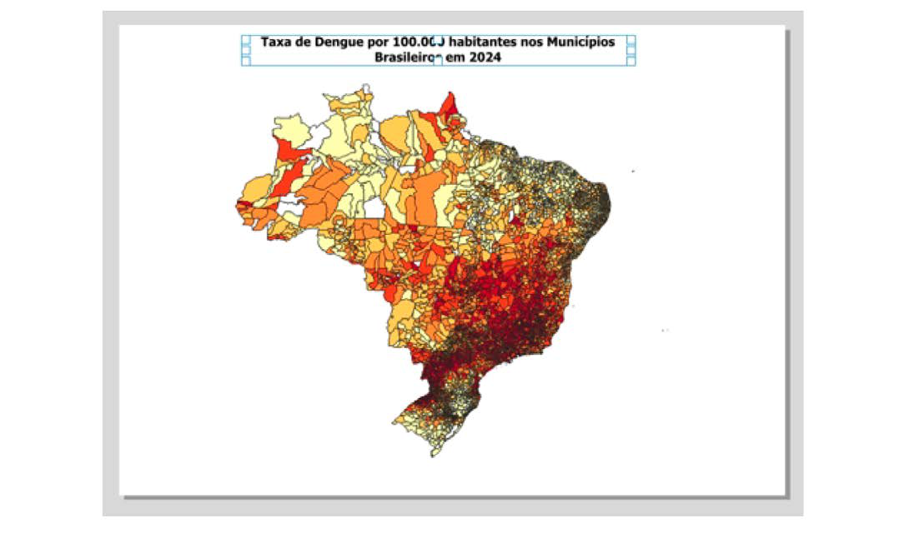
Adicionar Legenda: Use a ferramenta Adicionar Legenda. Nas Propriedades do Item da legenda, você pode editar os nomes das camadas e classes para torná-los mais claros.
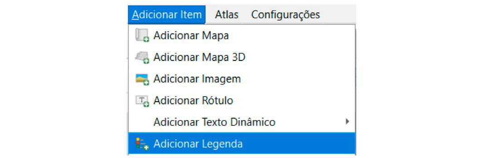
- Na aba Propriedades do Item desabilite a Atualização automática para habilitar as funções de excluir item da legenda e ordenar os itens.
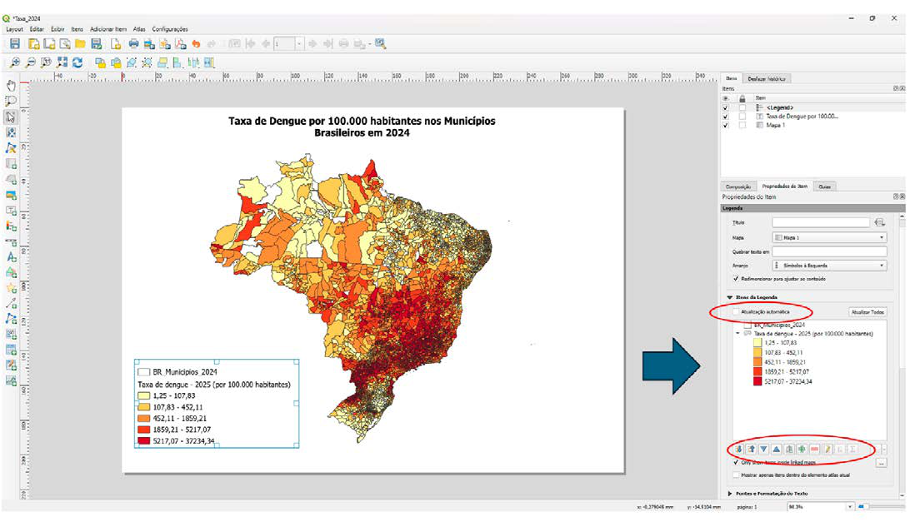
- Adicionar Barra de Escala: Use a ferramenta Adicionar Barra de Escala.
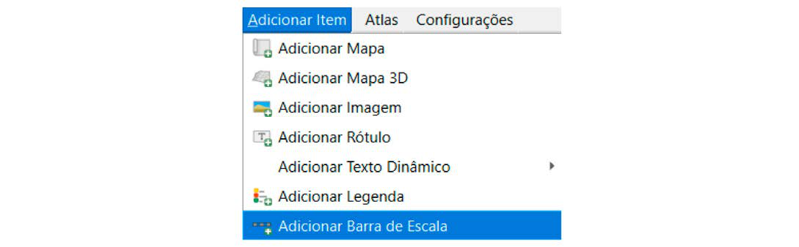
- Adicionar Seta Norte: Use a ferramenta Adicionar Seta Norte.
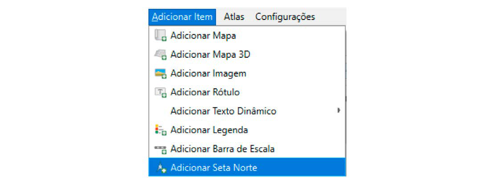
- Adicionar Fonte e Informações: Use a ferramenta Adicionar Rótulo para criar caixas de texto com a fonte dos dados, o sistema de coordenadas e o nome do autor. Na Propriedade do Item é possível escrever o texto e editar a fonte.
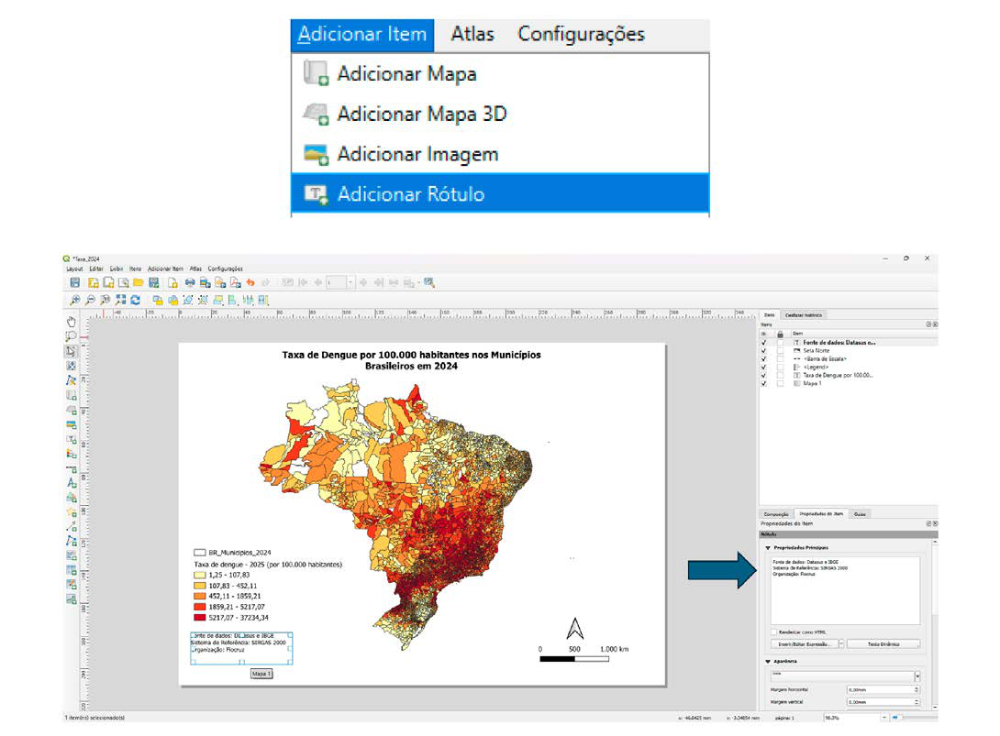
- Ajustar e Organizar: Mova e redimensione os elementos na página para criar um layout balanceado e esteticamente agradável. Use as guias e ferramentas de alinhamento para ajudar. Salve o projeto.
- Exportar o Mapa: Quando o layout estiver pronto, você pode exportá-lo em diferentes formatos através do menu Layout:
- Exportar como Imagem... (PNG, JPG)
- Exportar como SVG... (formato vetorial)
- Exportar como PDF...
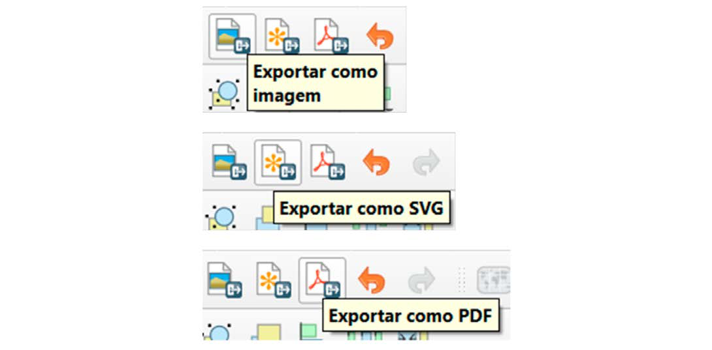
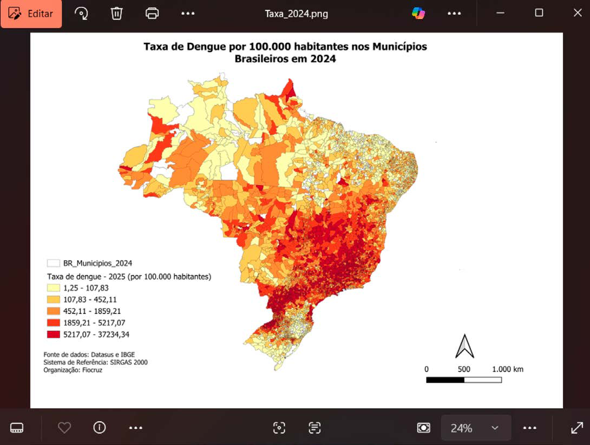